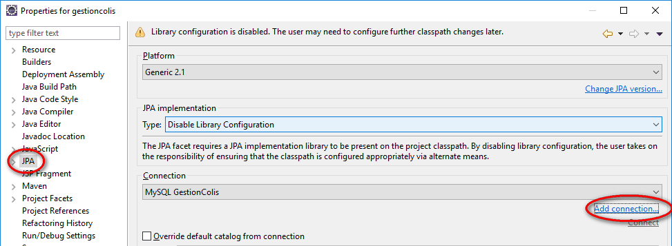
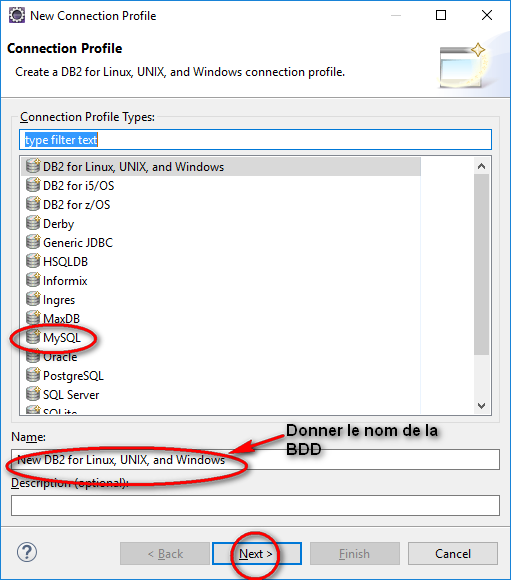
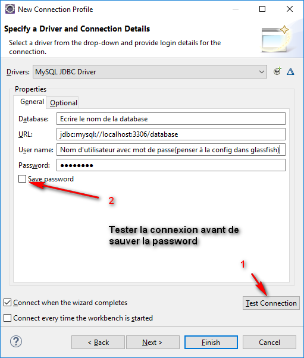
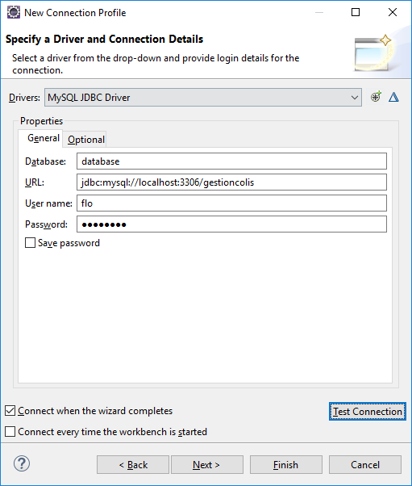

Dans eclipse
GlassFish
››
Mysql pool
››
Création de la connection à la base de données
Aller dans les propriétés du projet :


Penser à sélectionner le drivers de la BDD


Créé avec HelpNDoc Personal Edition:
Créer des livres électroniques EPub facilement